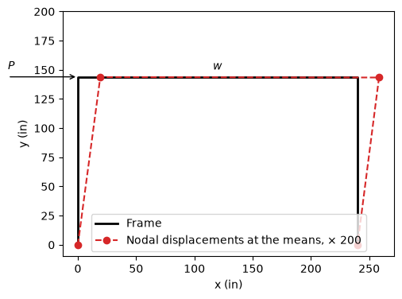

Download notebook · Download runnable bundle
Dependencies: PySTRA core and openseespy.
Reliability with an external finite-element model#
PySTRA needs only a Python function that returns the limit-state value, so the response can come from any solver with a Python interface. This example evaluates a portal frame with OpenSeesPy, runs FORM and SORM, and checks both against direct simulation of the same finite-element model.
Before you start: complete a first reliability analysis. This example also needs OpenSeesPy: python -m pip install openseespy.
Define the frame and the failure event#
The single-bay frame has fixed bases, 144 in columns and a 240 in girder, in kip and inch units. A lateral load \(P\) acts at the top of the left column and a uniform gravity load \(w\) acts on the girder. The base of the left column is misplaced horizontally by \(x\), and all members share the elastic modulus \(E\). The girder section has \(A=25\) in² and \(I=1500\) in⁴; the columns have \(A=29\) in² and \(I=2000\) in⁴. Failure occurs when the lateral sway \(u\) at the top of the left column exceeds 0.15 in:
Variable |
Unit |
Distribution |
Mean |
Standard deviation |
|---|---|---|---|---|
\(E\) |
ksi |
lognormal |
30 000 |
3 000 |
\(P\) |
kip |
normal |
25 |
5 |
\(w\) |
kip/in |
normal |
0.1 |
0.02 |
\(x\) |
in |
normal |
0 |
1 |
The inputs are independent.
[1]:
import matplotlib.pyplot as plt
import numpy as np
import openseespy.opensees as ops
import pystra as ra
Wrap the solver#
frame_sway builds the model and runs one linear static analysis. OpenSees holds a single global model, so ops.wipe() starts every evaluation afresh; for the same reason, call it from one thread at a time.
[2]:
def build_frame(E, P, w, x):
"""Create the portal frame in OpenSees' global model (kip, inch)."""
ops.wipe()
ops.model("basic", "-ndm", 2, "-ndf", 3)
ops.node(1, x, 0.0) # left base, misplaced by x
ops.node(2, 0.0, 144.0)
ops.node(3, 240.0, 144.0)
ops.node(4, 240.0, 0.0)
ops.fix(1, 1, 1, 1)
ops.fix(4, 1, 1, 1)
ops.section("Elastic", 1, E, 25.0, 1500.0) # girder
ops.section("Elastic", 2, E, 29.0, 2000.0) # columns
ops.geomTransf("Linear", 1)
ops.beamIntegration("Lobatto", 1, 1, 3)
ops.beamIntegration("Lobatto", 2, 2, 3)
ops.element("forceBeamColumn", 1, 1, 2, 1, 2) # left column
ops.element("forceBeamColumn", 2, 2, 3, 1, 1) # girder
ops.element("forceBeamColumn", 3, 3, 4, 1, 2) # right column
ops.timeSeries("Constant", 1)
ops.pattern("Plain", 1, 1)
ops.load(2, P, 0.0, 0.0)
ops.eleLoad("-ele", 2, "-type", "beamUniform", -w)
def frame_sway(E, P, w, x):
"""Lateral displacement at the top of the left column (in)."""
build_frame(E, P, w, x)
ops.constraints("Transformation")
ops.numberer("RCM")
ops.system("BandGeneral")
ops.test("NormDispIncr", 1.0e-6, 6)
ops.algorithm("Linear")
ops.integrator("LoadControl", 1.0)
ops.analysis("Static")
if ops.analyze(1) != 0:
raise RuntimeError("OpenSees analysis failed")
return ops.nodeDisp(2, 1)
PySTRA passes arrays of input values to the limit state, one entry per point, so that finite-difference gradients can be evaluated as a batch. The wrapper runs the solver once for each point.
[3]:
def sway_limit_state(E, P, w, x):
return np.array([0.15 - frame_sway(*point) for point in np.broadcast(E, P, w, x)])
print(f"Sway at the mean values: {frame_sway(30e3, 25.0, 0.1, 0.0):.4f} in")
Sway at the mean values: 0.0962 in
[4]:
nodes = [1, 2, 3, 4]
coordinates = np.array([ops.nodeCoord(node) for node in nodes])
displaced = coordinates + 200 * np.array([ops.nodeDisp(node)[:2] for node in nodes])
fig, ax = plt.subplots(figsize=(6, 4))
ax.plot(*coordinates.T, "k-", lw=2, label="Frame")
ax.plot(*displaced.T, "C3o--", label="Nodal displacements at the means, × 200")
ax.annotate("", xy=(0, 144), xytext=(-60, 144), arrowprops={"arrowstyle": "->"})
ax.text(-60, 150, "$P$")
ax.text(120, 150, "$w$", ha="center")
ax.set(xlabel="x (in)", ylabel="y (in)", aspect="equal", ylim=(-10, 200))
ax.legend(loc="lower center")
plt.show()

Run FORM and SORM#
[5]:
model = ra.StochasticModel()
model.add_variable(ra.Lognormal("E", 30e3, 3e3))
model.add_variable(ra.Normal("P", 25.0, 5.0))
model.add_variable(ra.Normal("w", 0.1, 0.02))
model.add_variable(ra.Normal("x", 0.0, 1.0))
limit_state = ra.LimitState(sway_limit_state)
form = ra.FORM(model, limit_state)
form_result = form.run()
print(form_result.summary())
for name, value, alpha in zip(
form_result.variable_names, form_result.design_point_x, form_result.alpha
):
print(f"{name}: design point {value:10.4f}, alpha {alpha:+.3f}")
FORM result
Status converged
Message Converged
Failure probability 0.0129101
Reliability index 2.22891
Iterations 7
Limit-state evaluations 71
E: design point 26335.0925, alpha -0.564
P: design point 34.2055, alpha +0.826
w: design point 0.1000, alpha -0.000
x: design point 0.0073, alpha +0.003
[6]:
sorm_result = ra.SORM(model, limit_state, form=form).run()
print(sorm_result.summary())
SORM result
Status converged
Message Fitted
Failure probability 0.0123922
Reliability index 2.24475
Fit curve
FORM reliability index 2.22891
Pf, breitung 0.0123922
Pf, modified breitung 0.0123168
Limit-state evaluations 25
Check by direct simulation#
Sampling the inputs and running the frame for each sample estimates the same probability without PySTRA’s transformations. One analysis takes tens of microseconds here, so 400 000 of them take seconds. The lognormal parameters follow from the mean and standard deviation of \(E\).
[7]:
rng = np.random.default_rng(2026)
n = 400_000
zeta = np.sqrt(np.log1p((3e3 / 30e3) ** 2))
E = rng.lognormal(np.log(30e3) - zeta**2 / 2, zeta, n)
P = rng.normal(25.0, 5.0, n)
w = rng.normal(0.1, 0.02, n)
x = rng.normal(0.0, 1.0, n)
pf = np.mean(sway_limit_state(E, P, w, x) <= 0)
standard_error = np.sqrt(pf * (1 - pf) / n)
print(f"Direct simulation: {pf:.5f} ± {standard_error:.5f} (one standard error)")
for result in (form_result, sorm_result):
print(
f"{result.method}: {result.failure_probability:.5f}, "
f"{(result.failure_probability - pf) / standard_error:+.1f} standard errors, "
f"{result.n_limit_state_evaluations} frame analyses"
)
assert abs(sorm_result.failure_probability - pf) < 3 * standard_error
Direct simulation: 0.01215 ± 0.00017 (one standard error)
FORM: 0.01291, +4.4 standard errors, 71 frame analyses
SORM: 0.01239, +1.4 standard errors, 25 frame analyses
Interpretation#
The importance factors show that the sway is governed by the lateral load \(P\) and the modulus \(E\). The frame is symmetric, so the gravity load \(w\) causes almost no sway, and a 1 in misplacement of the base hardly changes the geometry: both importance factors are near zero. The sway scales with \(P/E\), whose failure boundary is curved in standard normal space. FORM therefore overestimates the failure probability by about 6 %, more than four standard errors above direct simulation, while SORM’s curvature correction brings it within two.
FORM needed 71 frame analyses and SORM a further 25, against 400 000 for direct simulation. For a solver that takes seconds per analysis, that difference decides which methods are practical; active learning trains a surrogate to make simulation-based estimates affordable. OpenSees has reliability commands of its own; here the probabilistic model stays in PySTRA and the solver only returns responses.
Continue: Specifying a model · FORM and SORM · Active learning